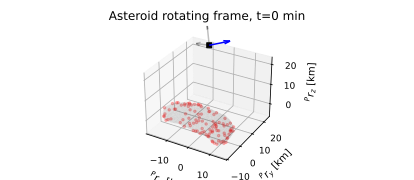
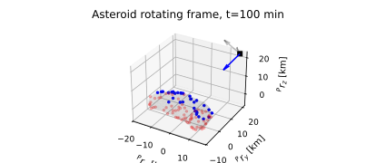
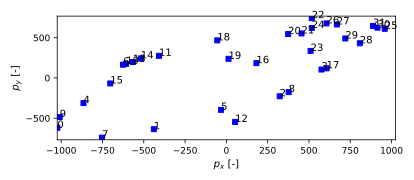
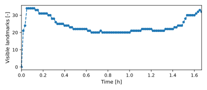
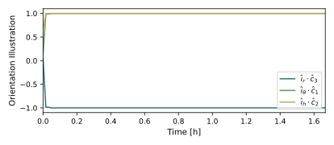

scenarioSmallBodyLandmarks
Overview
Discusses how to use the pinhole camera module to obtain landmark-based measurements around a small body. This script sets up a 6-DOF spacecraft which is orbiting asteroid 433 Eros.
The script is found in the folder basilisk/examples and executed by using:
python3 scenarioSmallBodyLandmarks.py
The simulation layout is shown in the following illustration. A single simulation process is created which contains both the spacecraft simulation, flight software and pinhole camera modules.

When the simulation completes 5 plots are shown for the 3D configuration at \(t_0\), the 3D configuration at \(t_f\), the landmark pixels at \(t_f\), the number of visible landmarks evolution and the camera frame C axes projection \(\hat c_1\), \(\hat c_2\) and \(\hat c_3\) onto the Hill or Orbit frame axes \(\hat\imath_r\), \(\hat\imath_{\theta}\) and \(\hat\imath_h\).
The basic simulation setup is very similar as the one used in scenarioAttitudeGuidance. The dynamics simulation is setup using a Module: spacecraft module to which a gravity effector is attached. Eros gravity is setup through a Module: planetEphemeris module which simulates Eros heliocentric motion. The flight software modules are copied from scenarioAttitudeGuidance as to align the spacecraft body frame, thus also the camera frame, with the Hill frame. The goal is to keep the camera pointing towards Eros center of mass in order to observe surface landmarks. In this case, the attitude control flight software makes \(\hat b_1\) body axis to point towards the asteroid center of mass \(-\hat\imath_r\) (negative radial direction ). The camera direction cosine matrix is prescribed by the user as \(\hat c_3=\hat b_1\), then it follows that attitude control is ensuring the camera focal direction (\(\hat c_3\)) is pointing towards the asteroid. This way, the camera is able to track surface landmarks.
The landmarks are setup based on Eros polyhedron shape. A landmark distribution is defined by surface positions and their normals expressed in the planet rotating frame. The normal is used to check field of view and lighting conditions from the camera and Sun respectively.
Since dynamics simulations can be computationally expensive, the module has a processBatch(rBatch_CP_P,
mrpBatch_BP, eBatch_SP_P, show_progress) method that is detached from the Simulation Base class. This method
requires batches (as matrices) of spacecraft position in the planet frame, spacecraft orientation in the planet
frame and Sun’s unit vector in the planet frame. The results can be accessed from the pinhole camera class
as illustrated in the subsequent script.
Illustration of Simulation Results
show_plots = True, useBatch = False
The useBatch flag is turned off by default but it showcases how the module can be executed detached from the
dynamics simulation. This is very convenient as it allows isolated experimentation with the pinholeCamera module
without the need of rerunning dynamics simulations (which can be slow if non-Keplerian gravity models are used
e.g. polyhedron). Alternatively, it allows to set up customized situations that may not be in accordance with a
dynamics simulation (e.g. manually prescribe radial pointing towards the asteroid)
The 3D situation is shown in these first two plots. In the first one, the attitude control has not converged and the camera is not pointing towards the asteroid. Consequently, no landmarks are visible. In the second one, the attitude control has aligned the camera focal direction (in blue) with the negative radial direction, thus some landmarks are visible (in blue) on the surface. The third figure shows the visible landmark pixels (with their labels) in the image plane.
  The next two plots show time evolution of the number of visible landmarks and the alignment of the camera frame with respect to the Hill frame. Note that \(\hat c_3\) is aligned with the negative radial direction of the Hill frame as expected.
 - scenarioSmallBodyLandmarks.landmark_distribution(vert_list, face_list, n_vert, n_face, n_lmk)[source]
Creates a landmark distribution based on a polyhedron shape.
- scenarioSmallBodyLandmarks.plot_3D(t, r, xyz_vert, order_face, posLmk, isvisibleLmk, dcm_CP)[source]
Plot the 3D situation of asteroid, landmarks, spacecraft and camera frame.
- scenarioSmallBodyLandmarks.plot_orientation(t, dcm_HP, dcm_CP)[source]
Plot the camera frame orientation with respect to Hill frame.